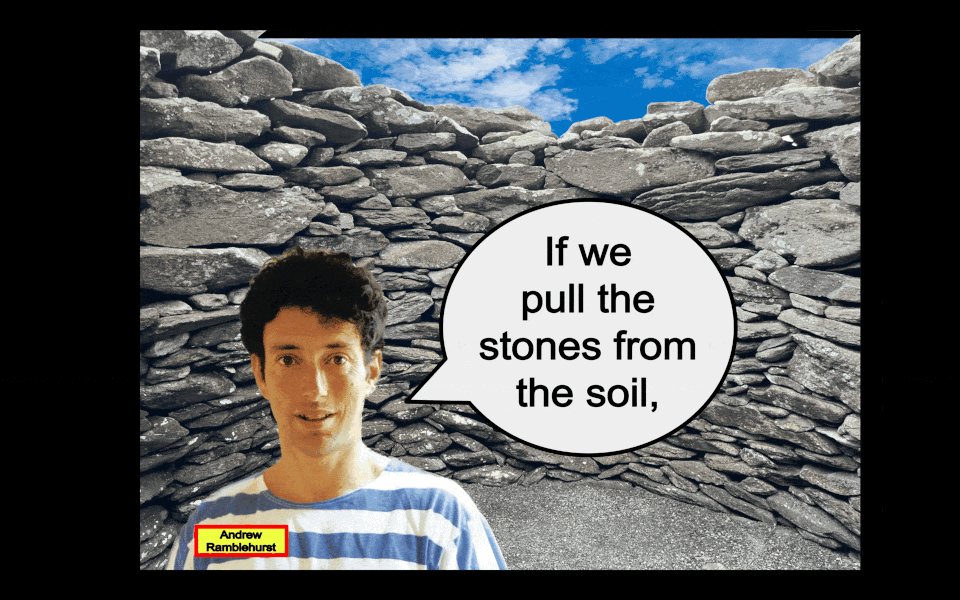

:: .06 ::

The rocks were heavy. At first, they simply loaded up wheelbarrows and walked them over to Hector’s house. But after a quizzical look from a neighbour, they decided to try an approach to better conceal the fact they were, technically, stealing a bunch of rocks.
Andrew called another skout named Jakob, who was a [hyper muscular] 150-cm tall porcelain doll with golden locks and skyBlue eyes, to help him construct some chariot carriages. They built three in an afternoon and attached them to random bicycles that Andrew had hangingAround. The chariot exteriors were simply painted and included curtained open-air windows, belying the barren interior whose sole purpose was to transport rocks.